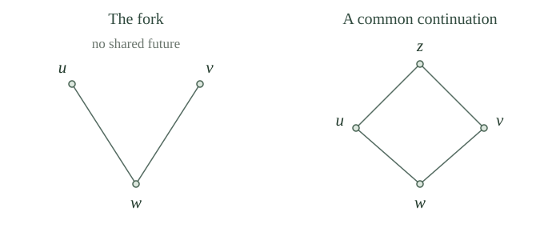

Use the shared propositional formulas with numbered atoms \(p_0,p_1,\ldots\), including native negation. The weak excluded middle instance associated with a formula \(A\) is
The weak excluded middle schema is the set \(\mathcal W=\{\mathsf W(A):A\text{ is a formula}\}\). It includes arbitrary compound formulas, rather than just the displayed atoms. A simultaneous formula substitution satisfies \(\mathsf W(A)[\sigma]=\mathsf W(A[\sigma])\), because it preserves disjunction and native negation.
In a Kripke model, the two alternatives say respectively that no future verifies \(A\), or that every future has a further extension verifying \(A\). The latter need not verify \(A\) at the current world. Thus this schema asks less than \(A\lor\neg A\).
For any fixed set \(S\) of formulas, the consequence relation with added axioms \(S\) is defined, for an arbitrary premise set \(\Gamma\), by
The deduction on the right is in the original intuitionistic calculus. No new proof constructor is introduced, and each deduction uses only finitely many added instances. Write \(\vdash_{\mathcal W}\) when \(S=\mathcal W\). This extension is commonly called KC, or the logic of weak excluded middle. Calling \(\mathsf W(A)\) an added axiom means it may be selected as one of these ordinary assumptions.
For every formula set \(S\), arbitrary \(\Gamma\), and formula \(C\),
If every member of \(S\) is valid on a given frame, then \(\Gamma\vdash_S C\) implies that every model on that frame and every world forcing \(\Gamma\) forces \(C\).
One direction weakens from \(\Gamma\cup E\) to \(\Gamma\cup S\). Conversely, finite support gives a finite \(F\subseteq\Gamma\cup S\) sufficient for the deduction. Put \(E=F\cap S\). Then \(E\) is finite, \(E\subseteq S\), and every member of \(F\) belongs to \(\Gamma\cup E\). Weakening gives the defining deduction.
For soundness, choose such an \(E\). The world forces its members by frame validity and the original premises by hypothesis. Ordinary intuitionistic soundness applied to the unchanged proof gives \(C\). This argument works even when \(\Gamma\) or \(S\) is infinite.
Let \((W,\leq)\) be a nonempty preordered frame. Its future cone at \(w\) is \(\mathord\uparrow w=\{v:w\leq v\}\). The cone is directed when
The witness \(z\) need not be unique, least, or fixed independently of \(u,v\). We say the frame has directed future cones when this holds at every \(w\). This condition compares worlds with a common predecessor; worlds in unrelated parts of the frame need not share a continuation.

In any model \(M\), if the cone above \(w\) is directed, then \(M,w\Vdash\mathsf W(A)\) for every formula \(A\).
Reason classically about the model. If no \(u\geq w\) forces \(A\), the definition of forcing gives \(w\Vdash\neg A\). Otherwise fix one such \(u\). Given any \(v\geq w\), directedness gives \(z\geq u,v\). Formula persistence carries \(A\) from \(u\) to \(z\).
Thus every future \(v\) has a further future forcing \(A\). The double-negation characterization gives \(w\Vdash\neg\neg A\). Either case supplies a disjunct of \(\mathsf W(A)\). The reasoning about whether a future exists is not an added excluded-middle inference in the object calculus.
Suppose \(u,v\geq w\) have no common upper bound. On this same frame there is a persistent valuation for which \(w\nVdash\mathsf W(p_0)\).
Make \(p_0\) true exactly on \(\mathord\uparrow u\), and every other atom false everywhere. This is persistent: if \(u\leq x\leq y\), then \(u\leq y\). In particular \(u\Vdash p_0\), so its predecessor \(w\) cannot force \(\neg p_0\).
No future \(z\geq v\) can force \(p_0\), since that would also give \(u\leq z\), contrary to the missing common upper bound. Therefore \(v\Vdash\neg p_0\). Because \(v\geq w\), this rules out \(w\Vdash\neg\neg p_0\). Both disjuncts fail at \(w\), as asserted. The valuation is allowed to depend on the chosen nonjoining pair.
For a nonempty preordered frame \((W,\leq)\), weak excluded middle is valid for every formula and every persistent valuation if and only if every future cone is directed:
Already validity of the single numbered-atom formula \(\mathsf W(p_0)\), over all valuations, is equivalent to this condition.
If all cones are directed, apply at each world of each model. Conversely, validity of all instances includes \(\mathsf W(p_0)\). If a cone were not directed, some two of its worlds would have no common upper bound. The explicit valuation in would refute that atom instance. Finally validity of \(\mathsf W(p_0)\) follows from validity of all instances, so the same argument proves the stronger single-formula characterization.
The converse from semantic consequences to deductions requires more than this frame characterization. The KC canonical frame has directed future cones, which supplies strong completeness for arbitrary sets of numbered-atom premises.
Let \(W\) be a finite partial order with a specified least world \(r\). Then its future cones are directed if and only if it has a greatest world \(t\), meaning \(w\leq t\) for every \(w\in W\). Hence these are also equivalent to validity of the weak excluded middle schema on this frame. Such a greatest world is unique.
A greatest world is a common upper bound for every pair, so works in every cone. For the converse, list the finitely many worlds as \(w_1,\ldots,w_n\). Start with \(t_0=r\). Having chosen \(t_{i-1}\), apply directedness above \(r\) to \(t_{i-1}\) and \(w_i\), both of which extend \(r\), to obtain \(t_i\) above them. Induction shows that \(t_i\) bounds \(w_1,\ldots,w_i\). Thus \(t_n\) is greatest.
The frame equivalence follows from . If \(t,t'\) are greatest, then \(t\leq t'\) and \(t'\leq t\), so antisymmetry gives equality. Finiteness is used in the single bound-building process; the infinite case differs.
The bounded KC countermodel construction produces frames in this finite class from every failed finite-premise deduction; the corresponding table search is therefore a decision procedure.
Put \(\mathsf D(A,B):=\neg(A\land B)\to(\neg A\lor\neg B)\). For every \(A,B\), the original intuitionistic calculus proves
Assume \(\mathsf W(A)\), and then \(\neg(A\land B)\). Eliminate the first disjunction. Its \(\neg A\) branch immediately gives \(\neg A\lor\neg B\). In the \(\neg\neg A\) branch, temporarily assume \(B\). Under a further assumption \(A\), conjunction introduction contradicts \(\neg(A\land B)\). Discharging \(A\) gives \(\neg A\), which contradicts the branch assumption \(\neg\neg A\). Discharging \(B\) therefore gives \(\neg B\), and right disjunction introduction gives the required alternative.
Disjunction elimination joins the branches. Discharge the conjunction's negation and then \(\mathsf W(A)\) to obtain the displayed closed implication. Every step is an ordinary intuitionistic introduction or elimination; the only additional formula used was the stated instance.
Let \(\mathcal D=\{\mathsf D(A,B):A,B\text{ are formulas}\}\). For every \(A\),
Consequently, for every premise set \(\Gamma\) and formula \(C\), \(\Gamma\vdash_{\mathcal W}C\) if and only if \(\Gamma\vdash_{\mathcal D}C\).
There is a closed proof of \(\neg(A\land\neg A)\): assume the conjunction, project its two contradictory components, and discharge. An assumed \(\mathsf D(A,\neg A)\) applied to that proof yields \(\neg A\lor\neg\neg A\). Discharge the assumption to obtain the displayed implication.
For the consequence equivalence, start with a finite set of extra instances in an ordinary deduction. To replace a \(\mathcal W\)-instance \(\mathsf W(A)\), allow \(\mathsf D(A,\neg A)\) and use the closed implication just proved. To replace a \(\mathcal D\)-instance \(\mathsf D(A,B)\), allow \(\mathsf W(A)\) and use . Only finitely many replacement instances are needed. The proof-replacement theorem substitutes these deductions for the old instance leaves while retaining every original premise from \(\Gamma\). This proves both directions.
Weak excluded middle is not an intuitionistic theorem schema, and adding it does not make \(p_0\lor\neg p_0\) derivable. Full excluded middle does imply weak excluded middle: for every \(A\),
The one-branch fork valuation refutes \(\mathsf W(p_0)\) at its root, so ordinary intuitionistic soundness rules out a closed deduction of that instance.
The two-world chain has a greatest world, hence validates every \(\mathcal W\)-instance by . Its standard growing-atom valuation refutes \(p_0\lor\neg p_0\) at the lower world. Soundness for the added axioms from therefore excludes a closed KC deduction of excluded middle.
For the displayed implication, assume \(A\lor\neg A\) and use cases. From \(A\), double-negation introduction gives \(\neg\neg A\), then the right disjunct of \(\mathsf W(A)\). From \(\neg A\), introduce its left disjunct. Discharge the initial assumption. Thus the weaker principle has an explicit proof from the stronger one.
Dummett’s principle supplies weak excluded middle by an ordinary intuitionistic proof from a linearity instance. The converse fails: a finite diamond with a greatest world validates the weak excluded middle schema but refutes a linearity instance at its root.
Does the greatest-world conclusion in still follow without finiteness?
No. Take \(W=\mathbb N\) with its usual order and root \(0\). For \(u,v\geq w\), the number \(\max(u,v)\) extends both, so every cone is directed. Nevertheless no \(n\) is greatest, because \(n+1\nleq n\). This frame validates every weak excluded middle instance by . Each finite stage of the bound-building argument is possible, but there is no final stage containing all worlds.
If every \(\mathsf W(A)\) holds at every world of one fixed model, must its frame have directed future cones?
No. Use the matching fork and chain models: both fork leaves verify exactly \(p_0\), the root verifies none, and the chain verifies \(p_0\) only above its lower world. The specified bounded morphism sends the fork root to the lower chain world and both leaves to the upper world.
The chain frame validates \(\mathsf W(A)\) for every \(A\), so its displayed model forces each such formula at both worlds. Truth transfer along that same morphism makes every world of the matching fork model force \(\mathsf W(A)\) too. Yet the fork's two terminal leaves have no common upper bound.
The characterization quantifies over every persistent valuation. Changing the fork valuation so that \(p_0\) holds at just one leaf gives exactly the failure already used in . Agreement in one matching pair of models cannot replace that universal quantifier.